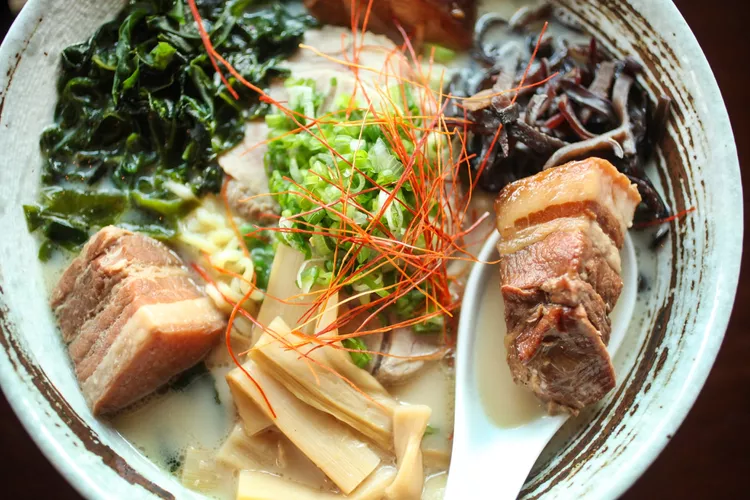
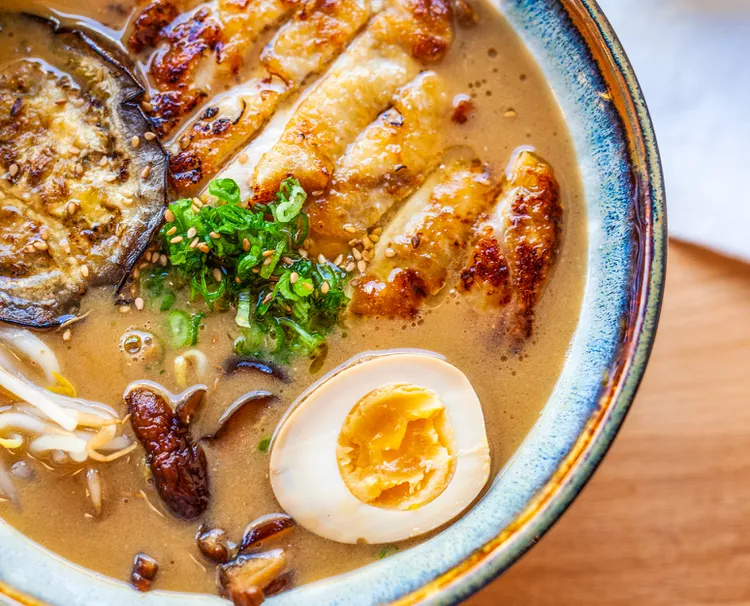
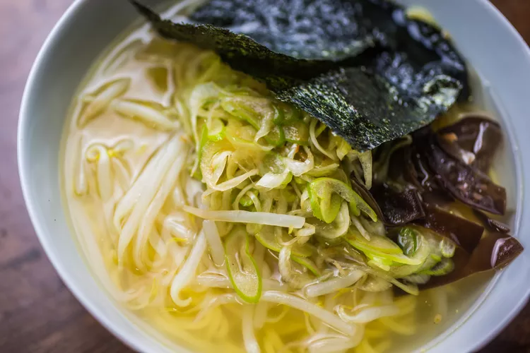
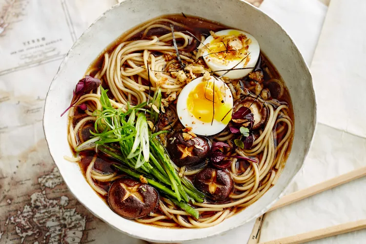

Some ramen trivia

Tonkotsu one of the richest ramens out there, tonkotsu — which was born in Fukuoka prefecture on the island of Kyushu — eventually spread across Japan, with every prefecture.

Miso as its name suggests, miso ramen is flavored with the fermented soybean paste of the same name, which can be made from soybeans, rice, or miso, and colored white or red.

Shio - (or salt) ramen is frequently made from a chicken broth base but can also call for pork or seafood. This lighter-bodied, lighter-flavored ramen is truly delicious

Shoyu is the Japanese word for soy sauce and this amazing lighter-style ramen — which can appear clear-brown or darker and cloudy — is flavored with exactly that.